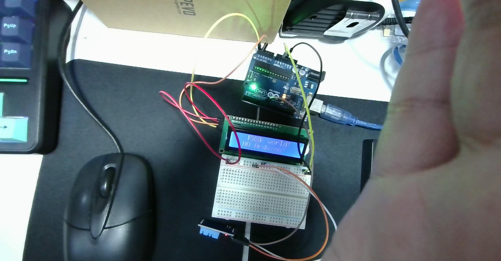
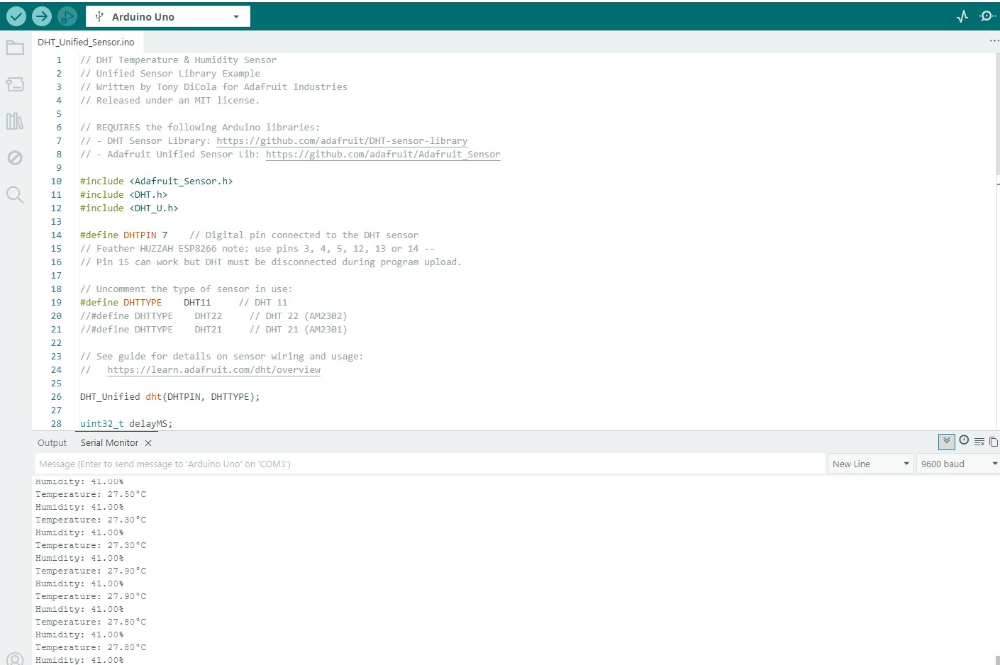

從 3-Pin 模組接線驗證、單線通訊協定 40-Bit 訊號時序到序列埠即時溫濕度數據解析
依據現場實拍照片，實驗麵包板上已連接 **DHT11 溫濕度模組**，並與先前設定好的 **LCD 1602** 與 **Arduino Uno** 協同就位：


| DHT11 引腳標示 | 訊號定義 | Arduino Uno 對應腳位 | 照片導線顏色 | 功能說明 |
|---|---|---|---|---|
| VCC (+) | 電源 5V | 5V (電源排針) | 橘色 / 紅色線 | 提供模組運作電源（3.3V ~ 5V）。 |
| DATA (S / OUT) | 單線數據 | 數位 Pin 7 | 白色 / 灰綠色線 | 單線雙向數位通訊傳輸線，對應 #define DHTPIN 7。 |
| GND (-) | 接地 | GND (電源排針) | 棕色 / 黑色線 | 電源負極共地迴路。 |
DHT11 採用專屬的單線雙向協定，微控制器與感測器之間完全仰賴精準的微秒（μs）脈衝電位交握：
41%）27°C）9）// 檔案路徑: D:\CLASS_NOTE\ec\arduino_dht11_unified_test.ino
#include <Adafruit_Sensor.h>
#include <DHT.h>
#include <DHT_U.h>
// 定義 DHT11 訊號腳連接至 Arduino 數位腳 7
#define DHTPIN 7
// 選擇感測器型號
#define DHTTYPE DHT11
DHT_Unified dht(DHTPIN, DHTTYPE);
uint32_t delayMS;
void setup() {
Serial.begin(9600);
while (!Serial);
Serial.println(F("DHT11 Unified Sensor 測試啟動"));
// 初始化 DHT 感測器
dht.begin();
// 取得感測器硬體規格與建議最小取樣間隔
sensor_t sensor;
dht.temperature().getSensor(&sensor);
dht.humidity().getSensor(&sensor);
// 設定採樣間隔 (DHT11 至少間隔 1 秒)
delayMS = sensor.min_delay / 1000;
if (delayMS < 1000) delayMS = 1000;
}
void loop() {
// 保持物理採樣週期
delay(delayMS);
// 讀取溫度事件
sensors_event_t event;
dht.temperature().getEvent(&event);
if (isnan(event.temperature)) {
Serial.println(F("✖ 溫度讀取失敗！"));
} else {
Serial.print(F("Temperature: "));
Serial.print(event.temperature, 2);
Serial.println(F("°C"));
}
// 讀取相對濕度事件
dht.humidity().getEvent(&event);
if (isnan(event.relative_humidity)) {
Serial.println(F("✖ 濕度讀取失敗！"));
} else {
Serial.print(F("Humidity: "));
Serial.print(event.relative_humidity, 2);
Serial.println(F("%"));
}
}對照截圖中的序列埠輸出，讀數非常精準且具備高靈敏度：
delay(50)），否則會因自體發熱導致測量值失準或直接回傳 NaN 錯誤。
| 感測器型號 | 通訊介面 | 溫度範圍 / 精度 | 濕度範圍 / 精度 | 取樣頻率 | 建議應用場合 |
|---|---|---|---|---|---|
| DHT11 (本次) | 單線式 (Single-Bus) | 0°C ~ 50°C (±2.0°C) | 20% ~ 90% (±5% RH) | 1 Hz (1 秒) | 教學實作、入門簡易溫控 |
| DHT22 (AM2302) | 單線式 (Single-Bus) | -40°C ~ 80°C (±0.5°C) | 0% ~ 100% (±2% RH) | 0.5 Hz (2 秒) | 農業大棚、戶外氣象監測 |
| BME280 | I2C / SPI | -40°C ~ 85°C (±0.5°C) | 0% ~ 100% (±3% RH) | 可達 100 Hz | 氣象站、無人機高度氣壓計 |
"C:\Users\User\Desktop\onclass\螢幕擷取畫面 2026-10-20 153131.jpg"C:\Users\User\Desktop\2026-10-20-153116.jpg 開始測試dht11的接線與基本範例變更摘要：根據上課實拍硬體照片（2026-10-20-153116.jpg）與 IDE 截圖（2026-10-20-153131_ide_dht11.jpg），建立 DHT11 實體接線對照（Pin 7）、單線雙向協定 40-bit 訊號交握時序流程圖、Adafruit Unified Sensor 程式碼解說與序列埠數據分析（27.9°C / 41%），並提供感測器規格選型對比與除錯指南，產出 Markdown、HTML 與 INO 實作檔案。